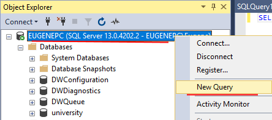
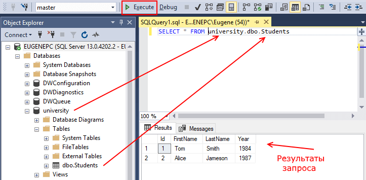
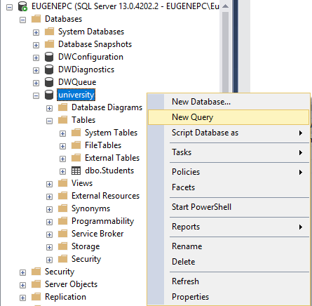

Первый запрос на T-SQL
В прошлой теме в SQL Management Studio была создана простенькая база данных с одной таблицей. Теперь определим и выполним первый SQL-запрос. Для этого откроем SQL Management Studio, нажмем правой кнопкой мыши на элемент самого верхнего уровня в Object Explorer (название сервера) и в появившемся контекстном меню выберем пункт New Query:

После этого в центральной части программы откроется окно для ввода команд языка SQL.
Выполним запрос к таблице, которая была создана в прошлой теме, в частности, получим все данные из нее. База данных у нас называется university, а таблица - dbo.Students, поэтому для получения данных из таблицы введем следующий запрос:
1 | SELECT * FROM university.dbo.Students |
Оператор SELECT позволяет выбирать данные. FROM указывает источник, откуда брать данные. Фактически этим запросом мы говорим "ВЫБРАТЬ все ИЗ таблицы university.dbo.Students". Стоит отметить, что для названия таблицы используется полный ее путь с указанием базы данных и схемы.

После ввода запроса нажмем на панели инструментов на кнопку Execute, либо можно нажать на клавишу F5.
В результате выполнения запроса в нижней части программы появится небольшая таблица, которая отобразит результаты запроса - то есть все данные из таблицы Students.
Если необходимо совершить несколько запросов к одной и той же базе данных, то мы можем использовать команду USE, чтобы зафиксировать базу данных. В этом случае при запросах к таблицам достаточно указать их имя без имени бд и схемы:
1 2 | USE universitySELECT * FROM Students |
В данном случае мы выполняем запрос в целом для сервера, мы можем обратиться к любой базе данных на сервере. Но также мы можем выполнять запросы только в рамках конкретной базы данных. Для этого необходимо нажать правой кнопкой мыши на нужную бд и в контекстном меню выбрать пункт New Query:

Если в этом случае мы захотим выполнить запрос к выше использованной таблице Students, то нам не пришлось бы указывать в запросе название базы данных и схему, так как эти значения итак уже были бы понятны:
1 | SELECT * FROM Students |